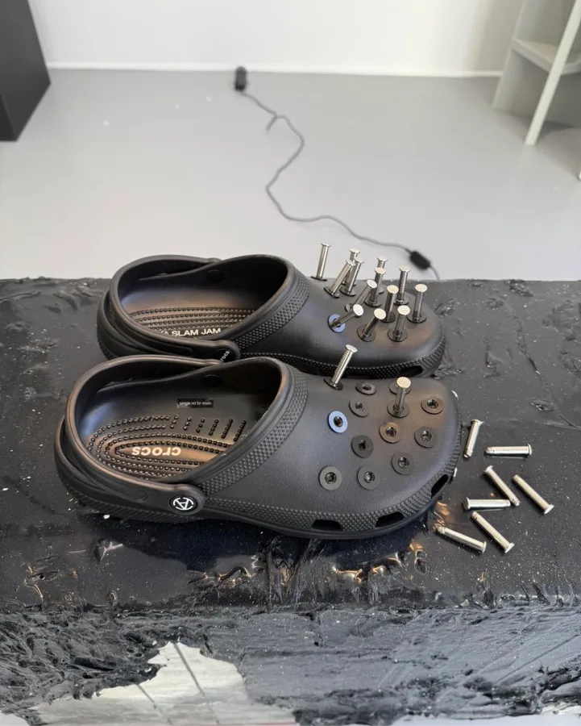
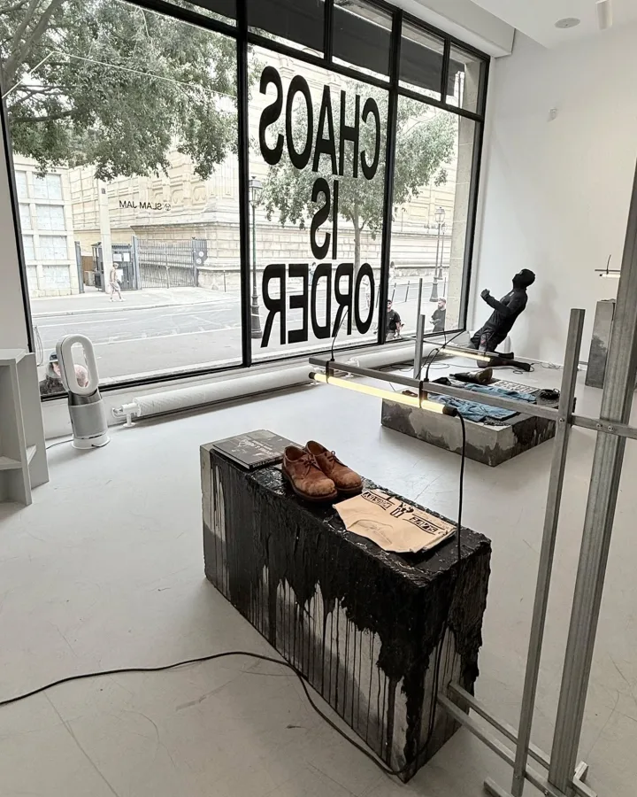
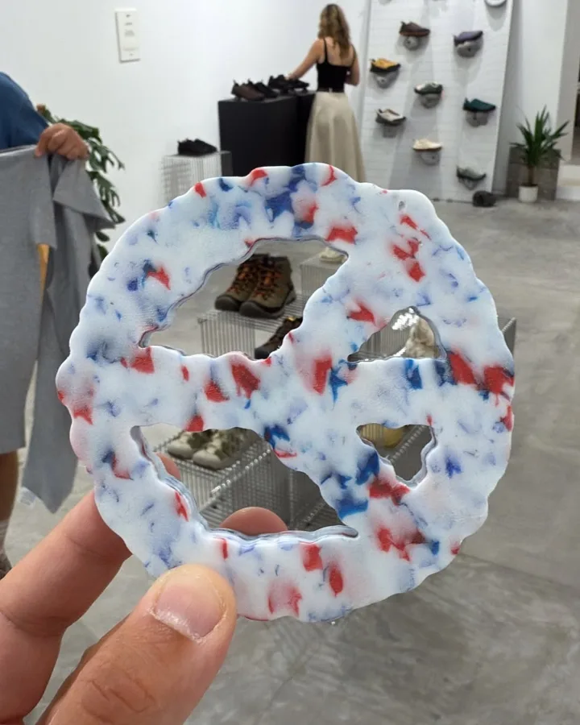
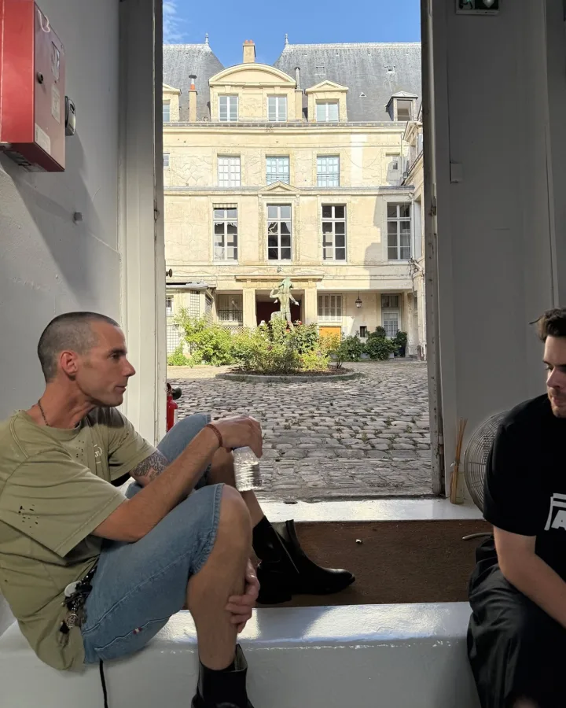
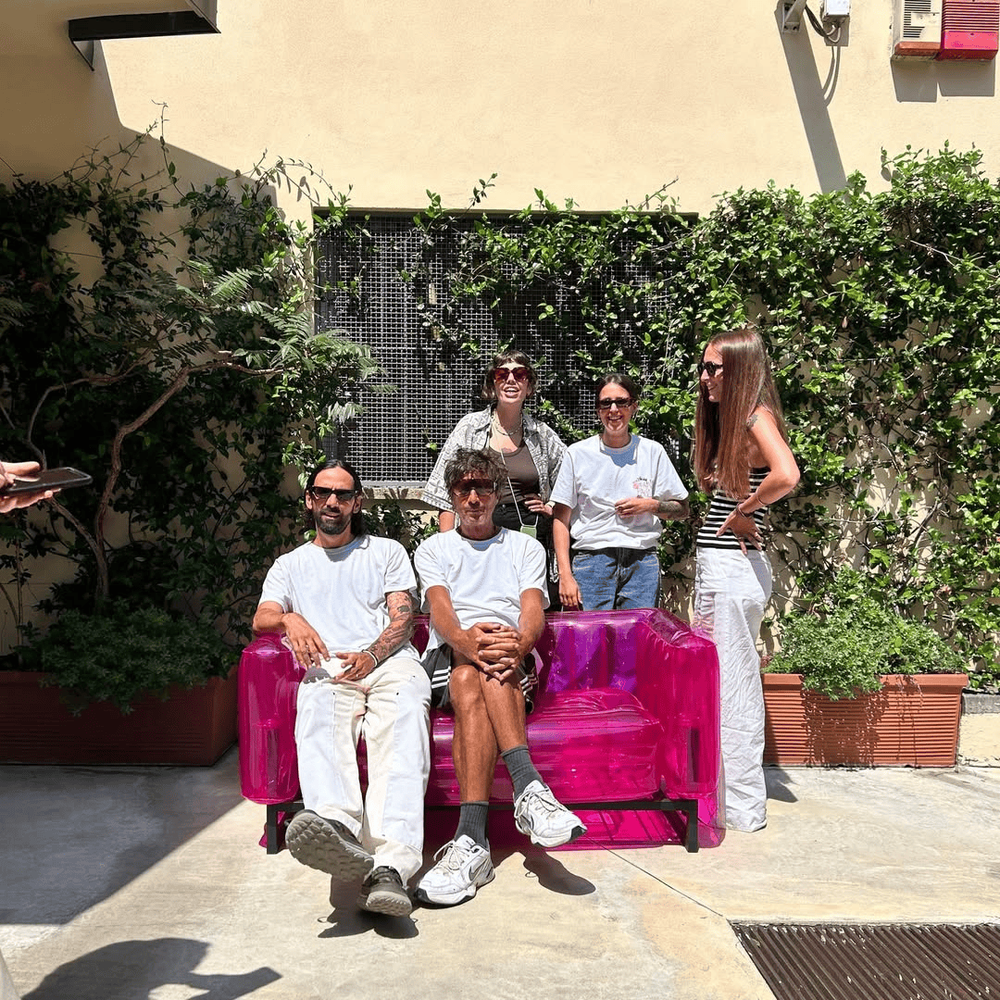

Our Story
Sept is an independent multibrand showroom founded in 2020 in Milan.
It comes from a strong knowledge and passion for street culture expressed in all known forms as music, art, of course fashion, sport and its newest expressions. It translates into a natural propensity towards the world of fashion by taking inspiration from all the stimulating things that surround us.
Our showroom follows his direction while remaining faithful to his identity, in an increasingly complex and difficult market, making the quality of service to customers and brands his first mission.





Our Family